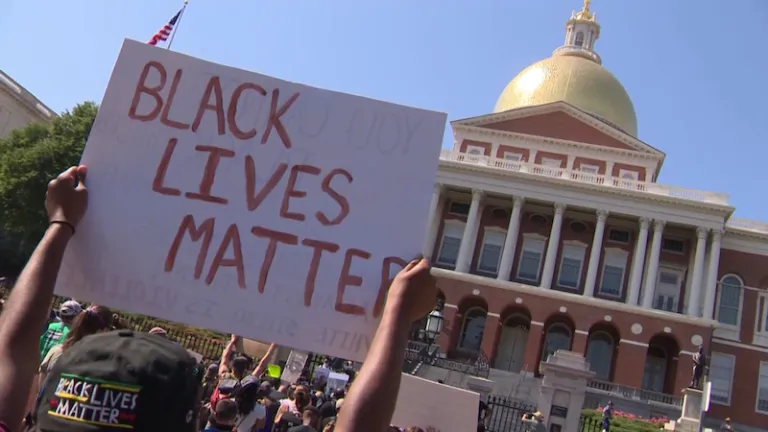

2020-12-05 08:00

On December 1st, after an endless and opaque process of reconciling House and Senate versions of police accountability legislation, both houses of the Massachusetts legislature voted to send S.2963 (“An Act Relative to Justice, Equity and Accountability in the Commonwealth”) to the Governor’s desk for signing.
Following national outrage at the police murders of George Floyd and Breonna Taylor, and thanks to unrelenting pressure by police reform advocates, House Speaker Robert DeLeo and Joint Judiciary Chair Claire Cronin were unable to bury police reform, as the House often does with reforms or progressive legislation.
Still, the reconciliation process ended up shielding police unions from many of the reforms in the Senate version. Among the legislation’s bitter disappointments: it preserves Qualified Immunity for police officers; fails to reform civil service laws which govern the hiring of police officers; leaves unchanged shoot-to-kill training for police cadets; doesn’t touch structural racism anywhere — including police departments; and fails to create alternatives to police handling of medical and psychiatric emergencies.
On the plus side, S.2963 adopts language regulating the use of face recognition, establishes a POST (Peace Officer Standards and Training) Commission with subpoena power to certify and investigate law enforcement officers — though not corrections officers. The bill also spells out the types of evidence necessary to suspend or revoke officer certification.
Under the POST Commission established by this legislation there are to be two divisions: one for police training and certification; another for police standards. This second division maintains a database of complaints of misconduct for each officer, and investigations carried out are subject to public records law (with some limitations).
The bill before the Governor limits the use of chokeholds, attack dogs, tear gas, and specifies de-escalation policies. It is the POST Commission’s responsibility to enforce these use of force standards. The bill also ends no-knock warrants — unless police can demonstrate they are life-saving.
School Resource Officers (SROs) will now be assigned by request of the school Superintendent, not the Chief of Police. And both school personnel and SROs are prohibited from sharing certain types of student information with law enforcement. The bill also expands expungement of juvenile records.
S.2963 defines police violence as a public health issue and requires the Department of Public Health to collect and report information on injuries or deaths at the hands of law enforcement. Besides the commission to study Qualified Immunity, the bill also establishes commissions to study: body cams; facial recognition; emergency hospitalization; civil service law; police cadet training; structural racism in correctional facilities and in the parole and probation systems; rewriting the model Memorandum of Understanding for SRO programs; and examining alternative emergency services.
While not daring to touch discriminatory hiring practices, the bill tweaks hiring, promotion, and discipline rules, especially where overtime fraud, corruption, and patronage may be involved.
The many study commissions established and the many decisions deferred by S.2963 show that the legislation is only the beginning in achieving real police accountability in the Commonwealth.
The City Councils of Springfield and Boston — where there have been numerous and high-profile cases of police abuse — have both applauded the bill’s measures. Boston City Council President Kim Janey and Springfield City Council President Justin Hurst penned a letter to the Governor on December 2nd urging him to sign the legislation without delay and without amendment.
In New Bedford, where Councilors were quick to condemn the Senate version of the bill for its Qualified Immunity provision, only a few members of the Council were prepared to offer opinions on any of the other provisions. Most I talked to claimed ignorance of its provisions.
Joseph P. Lopes, Ward 6 Councilor and Council President, said his main concern with the bill was Qualified Immunity and its impact on the morale of police and EMS workers. Lopes supports the School Resource Officer program and is concerned that, whether it’s the Chief or the Superintendent who requests SROs, that they have the discretion to move them around between schools. Lopes claims students want police officers in their hallways and he took a swipe at the Legislature for not inviting student testimony on SROs. Lopes was not alarmed by the establishment of the POST program, but could not comment on other provisions because he said he’d need more time to read through the entire bill.
Brian Gomes, the chair of Mayor Mitchell’s Use of Force Commission, and an author of a letter to the Legislature blasting Qualified Immunity, told me emphatically that he would never support the new bill. In consultation with the Police Union president, Gomes told me, he has determined that the bill will do a disservice to the public. When asked what provisions of the bill he objected to — now that Qualified Immunity is no longer a concern — Gomes told me that’s all he was prepared to say.
Councilor Debora Coelho, who earlier this year enrolled herself in the New Bedford Citizen’s Police Academy, is not only a fan of the police but an enthusiastic supporter of School Resource Officers. Asked about the change in discretion over SROs, Coelho said it’s not necessarily a bad thing to give a Superintendent discretion over their assignment. Similarly, she supports Qualified Immunity but does not oppose establishing a commission to look further into the issue.
Coelho disagrees with the bill’s ban on facial recognition. She has been a long-time supporter of CCTV and sees no reason that facial recognition should not be added to the law enforcement toolbox. Coelho does not oppose the new POST commission; in fact she believes it will ultimately give the public more confidence in officers and, therefore, actually be a good thing for police. Coelho doubts whether the Council will issue a statement on the entire police reform package anytime soon.
Scott Hovsepian, president of the 4,000-member Massachusetts Coalition of Police, is not happy that he didn’t get everything he wanted at the State House. Even after the Legislature yielded to police unions on Qualified Immunity and abandoned reforms of hiring and training of police, any measure of accountability was too much for Hovsepian: “The final compromise legislation is a final attack on police officers by lawmakers on Beacon Hill. It is 129 pages crowded with punitive measures, layers and layers of new bureaucracy and the abridgment of basic due process rights of police. It was delivered with almost zero notice and zero time for our leadership, our legal team and our members to process it before debate and votes were scheduled.”
But police reformers have found enough good in the legislation to get behind it.
Sonia Chang-Diaz is a member of the Black and Latino Legislative Caucus, a fierce proponent of police accountability, and one of the sponsors of S.2963. On December 2nd Chang-Diaz sent out an email to supporters requesting that they contact the Governor about swiftly signing the bill.
Carol Rose, Executive Director of the ACLU of Massachusetts, also welcomed the legislation. “This bill represents meaningful progress for Massachusetts, even as more work remains to be done. The ACLU will keep fighting for reforms to protect Massachusetts communities from over-policing and police violence—and end the impunity with which some officers operate. It’s time for systemic change and an end to policing as usual.”
Marlene Pollock, an organizer for the Coalition for Social Justice and a member of Bristol County for Correctional Justice, characterized the bill as “an important piece of legislation [that] bans racial profiling and chokeholds, creates a Peace Officer Standards and Training Commission which establishes the possibility of civilian oversight of police, among other things. This bill has enough in it that police unions are fighting like mad to tank it. The fact that Qualified Immunity was not tackled shows how much still needs to be done both at the legislative and grass roots level to elevate the many voices of victims of police misconduct.” Pollock urged immediate and un-amended passage of S.2963.
NAACP New Bedford Branch President, Dr. LaSella L. Hall, expressed disappointment with a Democratic legislative supermajority tasked with addressing police accountability in the midst of a national reckoning. “In the context of all the blood spilled in 2020, if this legislation is the best we can do, then we have a hell of a lot further to go. This bill is about 25 years too late. Police accountability should not be a political football. It’s about the lives of innocent people.”
Hall faulted the timidity of the Legislature in failing to end Qualified Immunity, the “get out of jail” doctrine that provides impunity for even bad cops. He cited the bill’s limited input from community groups, the disproportionate influence of police voices, weak community representation on civilian boards, ineffectual tweaks to hiring and training, and the lack of value placed on multilingual officers.
Despite the bill’s weaknesses, Hall describes S.2963 as “a necessary step in a long campaign for police accountability. The NAACP will use the measures afforded in the bill as a tool to advance the policies we believe in: community control or abolition of SROs, improvements to a long-overdue POST system, and promoting a task force that will promote ending racial bias.”
Congresswoman Ayanna Pressley, formerly a Boston City Council member, said that the bill “fell short” of needs and expectations by refusing to rein in Qualified Immunity: “For far too long, the doctrine of qualified immunity has protected the very people charged with enforcing the law from any consequence for breaking it, allowing police officers to use their badge as a shield from accountability. The legislation does not go far enough to address this systemic problem. By merely creating a commission to study the impact of qualified immunity in the Commonwealth, and limiting immunity only for decertified officers, rather than ending the harmful doctrine outright, Massachusetts has missed an opportunity to lead by ensuring that those responsible for upholding the law are subject to it too.”
https://www.youtube.com/watch?v=PjZHXZXtKn0
Pressley continued, “In any other occupation in America, there are standards of conduct and consequences for violating them — doctors can be sued for malpractice, lawyers can be sued for negligence. Policing should be no exception.”
Despite the legislation’s shortcomings, Police Reform Now (MA), a grassroots coalition of civil rights, religious, labor, and other organizations that advocate for legislative solutions to over-policed communities and for greater transparency in policing, is also urging the Governor to sign the bill without changes. But the coalition stops short of calling S.2963 “real” police reform because it doesn’t end Qualified Immunity, fails to include racial justice leaders in the POST Commission, and does not change how police are hired and trained.
Though America’s moment of national reckoning seems to have appeared quickly, it was grassroots organizing and years of advocacy that paved the way for these legislative reforms.
New Bedford police reform activist Erik Andrade, a member of Police Reform Now (MA) and BREATHE!, notes that “this bill affirms the power of the people and the importance of grassroots solidarity across the state. This step forward is promising and yet this is not a promised land. So we must continue to organize until real police accountability and restorative justice is achieved for families like Malcolm Gracia’s and for communities like New Bedford.”